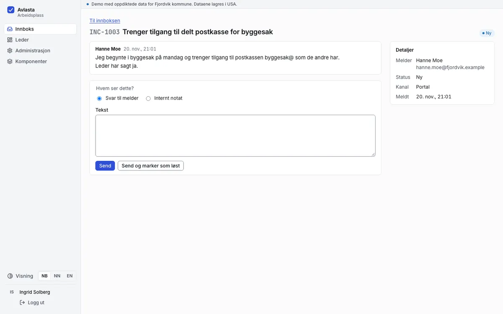

How Avlasta works
An employee reports an issue, the service desk solves it, and everyone can see where it stands. Here is what works in the demo today, and what is coming.
A ticket from start to finish, as it works in the demo today
You can do all of this yourself in the demo. Fjordvik municipality and the people are fictional.
The employee reports the issue
In the portal she writes what it is about and what happened. It takes less than a minute, also on a phone.
A ticket number at once
She gets a receipt with a ticket number she can refer to if she wants to ask about it.
The ticket lands in the inbox
The agent sees new tickets at the top, with requester, status and when it came in.
Reply and resolve
The agent replies to the requester or writes an internal note, and marks the ticket as resolved.



What exists, and what is coming
We only promise what is built. Items marked «Coming» are planned but not in the demo yet.
- Report an issue in the portalIn the demo now
Employees report the issue from phone or computer with a short description, and get a ticket number straight away.
- Inbox and ticket viewIn the demo now
The agent sees open and resolved tickets, replies to the requester or writes an internal note, and marks the ticket as resolved.
- Norwegian Bokmål, Nynorsk and EnglishIn the demo now
The portal and the workspace work in all three languages.
- Email in and outComing
Issues are reported by email, and replies go out as email.
- Answers before the ticket is sentComing
The portal suggests a solution from the knowledge base before the employee sends the ticket.
- Suggestions from AIComing
Suggested category and reply, with sources. The agent accepts or dismisses with one click.
- AI that carries out routine tasksComing
Such as access and passwords. You see what will happen before it happens, and can undo afterwards.
- Several municipalities in one serviceComing
Own portal, own deadlines and own report per municipality, with shared queues.
- Reports and value statementComing
Figures for management: what was solved, how fast, and how much time the system took off your hands.
How AI will be used in Avlasta
The AI features are under construction and not switched on in the demo. These are the rules they are built by.
Suggestions with sources
AI suggests, the agent decides. Each suggestion shows what it is based on.
See it before it happens
Anything that changes something is shown as a preview first. Afterwards it can be undone.
Everything is logged
Everything AI has done is in a log the organisation can read.
You decide
AI can be switched off, feature by feature. Avlasta works without it.
AI is included in the price, with no meter and no extra invoice. AI is not to be used to assess, rank or profile employees.
How to try the demo
- Open the demo, switch to English if you like, and choose to report an issue as an employee in Fjordvik. Write an issue and send it.
- Go back and open the workspace as an agent. Pick one of the fictional agents.
- Find your ticket in the inbox, reply to it, and mark it as resolved.
Do not enter real personal data in the demo. What you write may be seen by others.